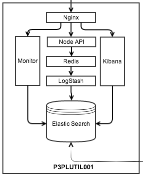
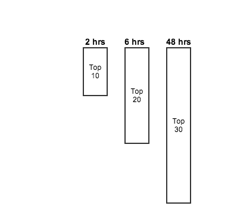
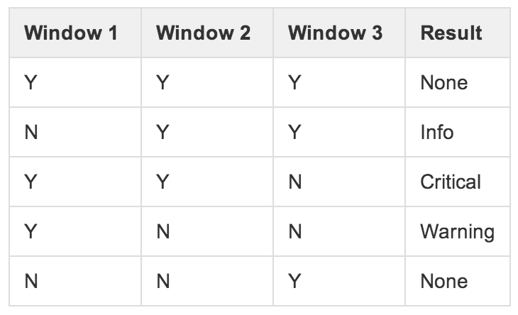

Monitoring Logs
with
Elasticsearch
with
Elasticsearch
We are Acme Labs part of WSB
Ashish Shubham
Kevin Zhang
Jared Lera
What's the problem?
Well, problems are not detected until our customers detect them first.
Current Scenario:
Customers encounter an issue
A select few customers call into C3
C3 escalates to ATS
ATS escalates to the devs
Devs fix issue
Ideal Scenario:
Monitor finds an issue
Appropriate team gets notified
Team fixes issue
Message can be posted on web app
If customer calls in, C3 has an answer
Problem with these Tools:
- No alerting mechanism
- Cannot customize without code change
- A lot of noise
- Limited filters
Ideal Solution:
What is out there:
- Elastic Search
- Log Stash
- Kibana
- New Relic
- Stats D
- SQL Reporting Services
- Hadoop
Elastic Search:
- A document based NoSQL datastore
- Out of the box horizontally scalable
- Has HTTP Rest query interface - JSON
Log Stash:

- Use it to collect, parse, and store logs for searching
- Works with any number of inputs/outputs
- Creates a dynamic schema from unstructured JSON logs
Kibana:
- Create your own dashboard
- Analyze your logs
- WSB Client Side Dashboard
Our ELK Server Setup:

ELK Sample App Setup:
- ACME Labs Sample App
- http://www.json-generator.com/
Creating your own Dashboard:
WSB Monitor App:
WSB Monitor Admin App:
Monitoring Logs:
Adaptive Thresholds:


Perfomance of our Setup:
- Load Test Demo
What is next:
- Migrate logs to Hadoop
- Use corporate Elastic Search
- Improve Dynamic Thresholds
- Open source Monitor App
Q & A: